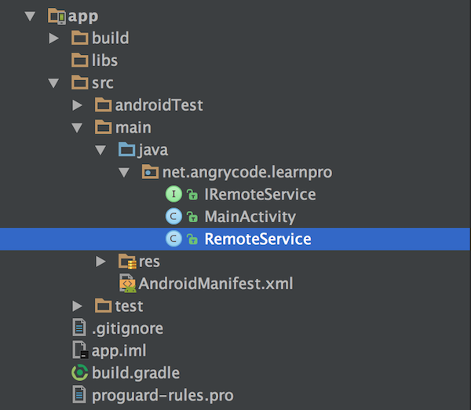
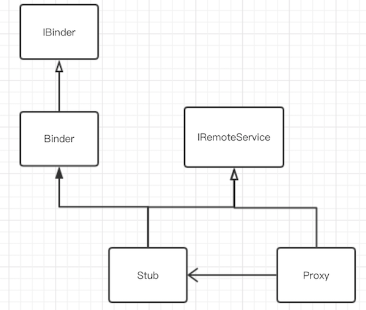
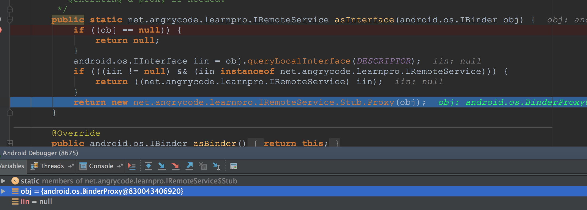
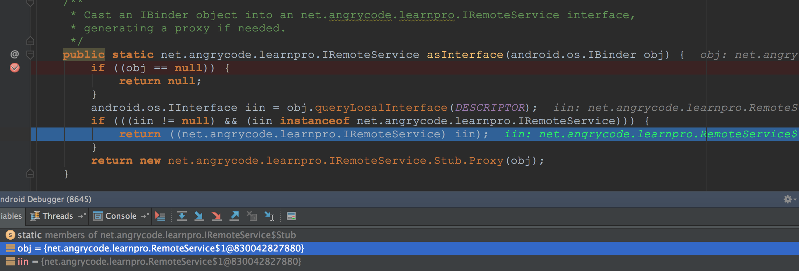

源码分析从AIDL看Binder进程间通信的流程
Binder通信是Android系统架构的基础。本文尝试从AIDL的使用开始理解系统的Binder通信。
0x00 一个AIDL的例子
首先我们创建一个项目，写一个RemoteService.java，并定义个AIDL接口IRemoteService.aidl
interface IRemoteService {
String getText();
}
这时候IDE会自动在目录build/generated/source/aidl/debug/生成IRemoteService.java文件。
本文为了方便调试和理解AIDL的过程，我们把生成的IRemoteService.java文件拷贝出来，放在app/main/java目录下，然后把aidl文件夹删除。
RemoteService为服务端，MainActivity为客户端。最后项目结构为

0x01 远程服务RemoteService
public class RemoteService extends Service {
public final static String ACTION = "net.angrycode.RemoteService";
@Nullable
@Override
public IBinder onBind(Intent intent) {
return mBinder;
}
/**
* 定义远程服务对外接口
*/
IRemoteService.Stub mBinder = new IRemoteService.Stub() {
@Override
public String getText() throws RemoteException {
return "text from remote,pid:" + Process.myPid();
}
};
}
在RemoteService中定义IBinder接口，并在onBind()方法中返回，供客户端使用。
最后在mainifest文件中注册远程服务，指定进程为私有进程
<service android:name=".RemoteService"
android:process=":remote">
<intent-filter>
<action android:name="net.angrycode.RemoteService"/>
</intent-filter>
</service>
0x02 本地客户端MainActivity
public class MainActivity extends AppCompatActivity {
private TextView mTextMessage;
@Override
protected void onCreate(Bundle savedInstanceState) {
super.onCreate(savedInstanceState);
setContentView(R.layout.activity_main);
mTextMessage = (TextView) findViewById(R.id.message);
}
public void onClickBind(View view) {
Intent service = new Intent(this, RemoteService.class);
service.setAction(RemoteService.ACTION);
bindService(service, conn, Context.BIND_AUTO_CREATE);
}
public void onClickUnBind(View view) {
unbindService(conn);
}
ServiceConnection conn = new ServiceConnection() {
@Override
public void onServiceConnected(ComponentName name, IBinder service) {
IRemoteService iRemoteService = IRemoteService.Stub.asInterface(service);
try {//连接之后获取到远程服务text
String text = iRemoteService.getText();
mTextMessage.setText(text);
} catch (RemoteException e) {
e.printStackTrace();
}
Toast.makeText(getApplication(), "远程服务已连接", Toast.LENGTH_LONG).show();
}
@Override
public void onServiceDisconnected(ComponentName name) {
Toast.makeText(getApplication(), "远程服务已断开", Toast.LENGTH_LONG).show();
}
};
}
本地客户端实现了ServiceConnection接口，用于监听远程服务的连接状态，并在onServiceConnected()中拿到远程服务RemoteService对外的接口IRemoteService的引用。
当客户端进行绑定远程服务时，就使用IRemoteService.Stub.asInterface(IBinder)获取到远程服务对象，客户端与服务端的通信就开始了。
0x03 IRemoteService接口
系统自动生成的这个文件中有除了我们定义getText()方法外还生成了两个内部类Stub和Proxy。
public interface IRemoteService extends android.os.IInterface {
/**
* Local-side IPC implementation stub class.
*/
public static abstract class Stub extends Binder implements IRemoteService {
private static final java.lang.String DESCRIPTOR = "net.angrycode.learnpro.IRemoteService";
/**
* Construct the stub at attach it to the interface.
*/
public Stub() {
this.attachInterface(this, DESCRIPTOR);
}
/**
* Cast an IBinder object into an net.angrycode.learnpro.IRemoteService interface,
* generating a proxy if needed.
*/
public static IRemoteService asInterface(IBinder obj) {
if ((obj == null)) {
return null;
}
android.os.IInterface iin = obj.queryLocalInterface(DESCRIPTOR);
if (((iin != null) && (iin instanceof IRemoteService))) {
return ((IRemoteService) iin);
}
return new IRemoteService.Stub.Proxy(obj);
}
@Override
public IBinder asBinder() {
return this;
}
@Override
public boolean onTransact(int code, Parcel data, Parcel reply, int flags) throws RemoteException {
switch (code) {
case INTERFACE_TRANSACTION: {
reply.writeString(DESCRIPTOR);
return true;
}
case TRANSACTION_getText: {
data.enforceInterface(DESCRIPTOR);
java.lang.String _result = this.getText();
reply.writeNoException();
reply.writeString(_result);
return true;
}
}
return super.onTransact(code, data, reply, flags);
}
private static class Proxy implements IRemoteService {
private IBinder mRemote;
Proxy(android.os.IBinder remote) {
mRemote = remote;
}
@Override
public android.os.IBinder asBinder() {
return mRemote;
}
public java.lang.String getInterfaceDescriptor() {
return DESCRIPTOR;
}
@Override
public java.lang.String getText() throws RemoteException {
android.os.Parcel _data = android.os.Parcel.obtain();
android.os.Parcel _reply = android.os.Parcel.obtain();
java.lang.String _result;
try {
_data.writeInterfaceToken(DESCRIPTOR);
mRemote.transact(Stub.TRANSACTION_getText, _data, _reply, 0);
_reply.readException();
_result = _reply.readString();
} finally {
_reply.recycle();
_data.recycle();
}
return _result;
}
}
static final int TRANSACTION_getText = (android.os.IBinder.FIRST_CALL_TRANSACTION + 0);
}
public java.lang.String getText() throws android.os.RemoteException;
}
Stub类继承于Binder，但它们都实现了IRemoteService接口。
Binder是何物呢？
Base class for a remotable object, the core part of a lightweight remote procedure call mechanism defined by Binder.This class is an implementation of IBinder that provides standard local implementation of such an object.
可以看出Binder是一个远程对象，它实现了提供本地标准接口的IBinder。

Stub类代表着远程服务，而Proxy代表着远程服务在本地的代理。
0x04 获取Binder对象
在客户端MainActivity中，绑定远程服务之后，使用IRemoteService.Stub.asInterface()方法获取到远程服务的Binder对象。
/**
* Cast an IBinder object into an net.angrycode.learnpro.IRemoteService interface,
* generating a proxy if needed.
*/
public static net.angrycode.learnpro.IRemoteService asInterface(android.os.IBinder obj) {
if ((obj == null)) {
return null;
}
android.os.IInterface iin = obj.queryLocalInterface(DESCRIPTOR);
if (((iin != null) && (iin instanceof net.angrycode.learnpro.IRemoteService))) {
return ((net.angrycode.learnpro.IRemoteService) iin);
}
return new net.angrycode.learnpro.IRemoteService.Stub.Proxy(obj);
}
这个方法先查找本地是否存在这个对象，存在则返回；不存在则返回一个Proxy对象。
通过定点调试，可以知道当RemoteService在子进程中时，asInterface(obj)参数是一个BinderProxy对象，这个是远程服务进程的代理类。这个时候返回给客户端的是Proxy对象。

客户端与服务端不在同一进程时，通过BinderProxy进行通信。
当把manifest中RemoteService的android:process=':remote'配置去掉时，asInterface(obj)的参数的传递就是RemoteService$1，其实就是RemoteService里面的内部类Stub。

然后我们再回到多进程的流程来，跳转到Proxy中
0x05 Proxy.transact()
通过名字知道Proxy就是远程服务的代理，它持有Binder的引用。当客户端调用iRemoteService.getText()时其实是进入到Proxy类中getText()方法。
public java.lang.String getText() throws android.os.RemoteException {
android.os.Parcel _data = android.os.Parcel.obtain();
android.os.Parcel _reply = android.os.Parcel.obtain();
java.lang.String _result;
try {
_data.writeInterfaceToken(DESCRIPTOR);
mRemote.transact(Stub.TRANSACTION_getText, _data, _reply, 0);
_reply.readException();
_result = _reply.readString();
} finally {
_reply.recycle();
_data.recycle();
}
return _result;
}
首先获取到两个Parcel对象，这个是进程间通信的数据结构。_data和_reply分别为getText()需要传递的参数和返回值，getText()无需参数，只有String类型返回值。
然后调用mRemote的transact()方法(其实就是调用BinderProxy的transact()方法)。然后通过_reply获取到执行方法后的返回值，这里就是一个RemoteService里面实现的String。
在Proxy中执行transact()方法后又回调到哪里了呢？
在onTransact()方法中设置一个断点，通过调试，我们发现其实是回调到了Stub类中onTransact()方法。
0x06 Stub.onTransact()
public boolean onTransact(int code, Parcel data, Parcel reply, int flags) throws RemoteException {
switch (code) {
case INTERFACE_TRANSACTION: {
reply.writeString(DESCRIPTOR);
return true;
}
case TRANSACTION_getText: {
data.enforceInterface(DESCRIPTOR);
java.lang.String _result = this.getText();
reply.writeNoException();
reply.writeString(_result);
return true;
}
}
return super.onTransact(code, data, reply, flags);
}
onTransact()方法中第一个参数code是与transact()第一个参数code是对应的，这是客户端与服务端约定好的常量。
这时候会执行到onTransact()方法中的_result = this.getText()方法。而Stub类是在RemoteService中实现的，故就访问到远程服务中资源了。
0x07 总结
通过以上流程分析可以知道，通过bindService绑定一个服务之后在onServiceConnected()中拿到了远程服务的在本地的Proxy，通过它与远程服务进行通信。
- 上一篇 机器学习之逻辑回归
- 下一篇 【干货】入门区块链技术看这里就够了